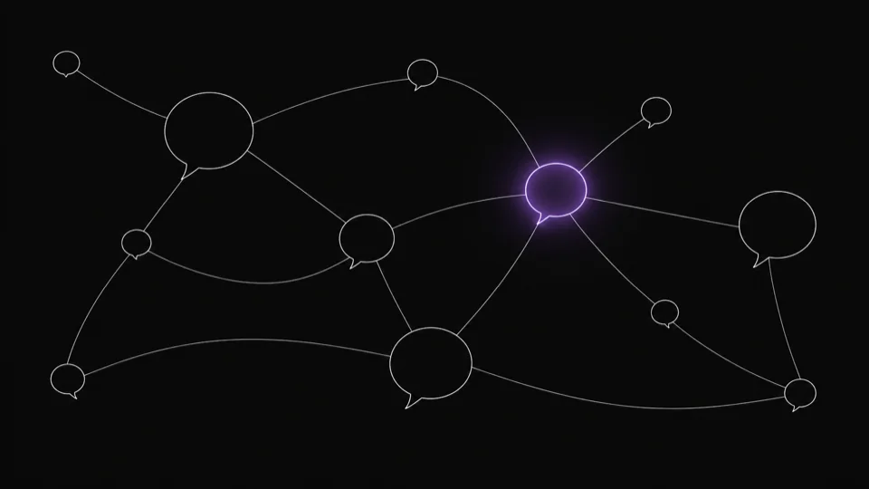
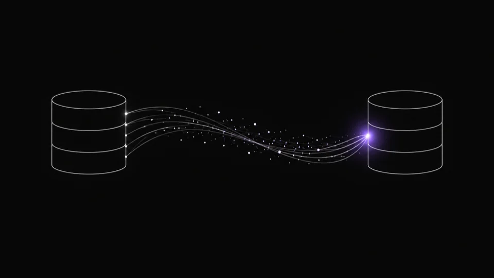
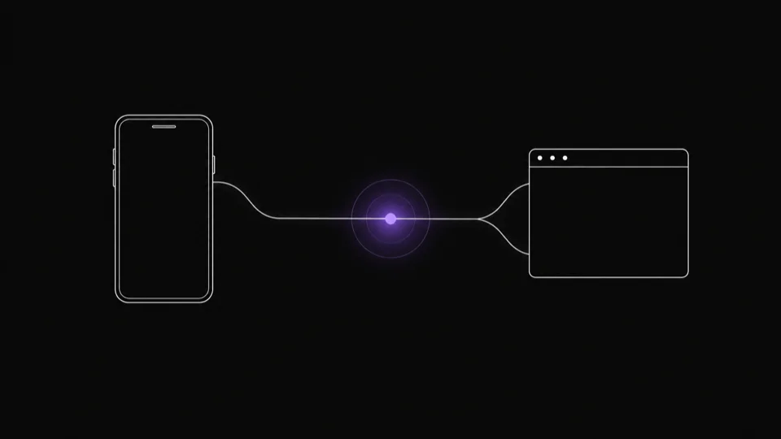
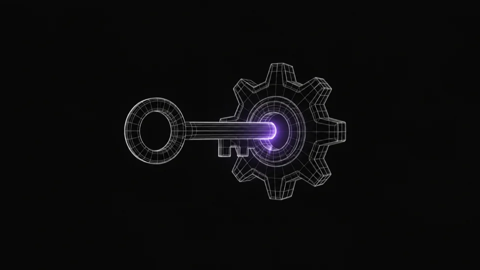
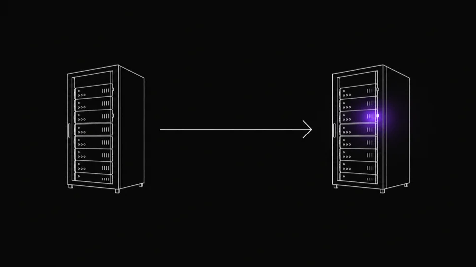
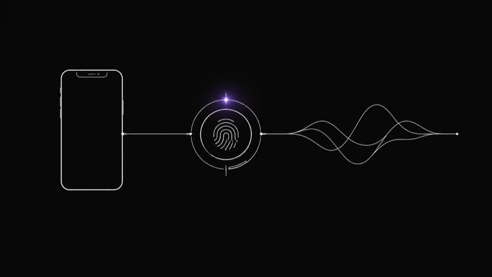
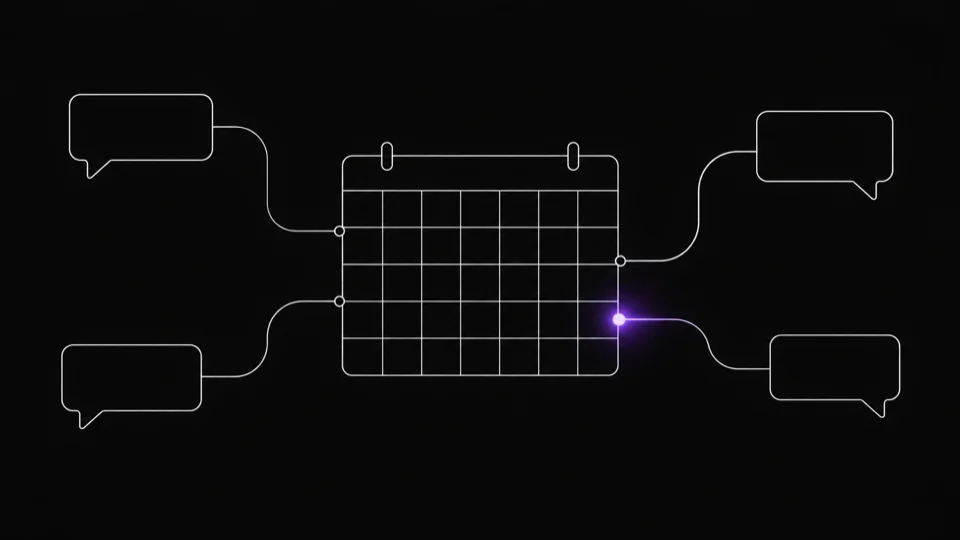

海外向けに営業を行う企業向け
海外営業支援AI
海外から届く多言語の問い合わせを受信すると自動で翻訳し、社内資料を検索して根拠付きの回答案を OpenAI API で生成します。担当者は React 製の管理画面で回答案を確認・修正して承認ボタンを押すだけで返信でき、バックエンドは FastAPI、実行基盤は AWS で常時稼働させています。
事例
受託開発・AI開発と、業務コンサルティングの事例です。一部のお客様は匿名でご紹介しています。

海外向けに営業を行う企業向け
海外から届く多言語の問い合わせを受信すると自動で翻訳し、社内資料を検索して根拠付きの回答案を OpenAI API で生成します。担当者は React 製の管理画面で回答案を確認・修正して承認ボタンを押すだけで返信でき、バックエンドは FastAPI、実行基盤は AWS で常時稼働させています。

木材・建材商社向け
日々の受発注や在庫管理に使われている VB.NET 製の基幹システムを止めずに、営業成績表の出力機能や経費精算まわりの機能を1つずつ追加しています。あわせて、長年蓄積されたデータを既存の SQL Server から MySQL へ、業務を止めずに段階移行しています。

マッチングサービス運営企業向け
モバイルアプリ(Expo)・Web(Next.js)・管理画面の3本を、認証まわりも含めて一体で開発し、会員登録から公開まで伴走しました。公開後も、会員からの要望に応じた機能追加と管理画面からの日々の会員対応・保守運用を継続して担当しています。

業務ソフトウェア向け
業務データを変換する Electron 製の Windows アプリ本体に加えて、起動時にアプリと通信してライセンスを発行・認証する PHP + MySQL 製のサーバー、製品を紹介する Web サイトまでを一式で開発しました。アプリ単体の納品ではなく、認証基盤とサイトを含めた製品まわり全体を担当しています。

Webサービス運営企業向け
稼働中の会員制サイトを Linux サーバー間で移設しました。サーバー本体の引っ越しだけでなく、ドメインの DNS 切替と、移設後もメールが迷惑メール扱いされず届き続けるための SPF・DKIM を含む到達性設定まで、周辺作業を一式で対応しています。

業務用アプリの改修
既存の Swift 製 iOS アプリにスキャナー連携などの機能を追加開発しました。App Store を経由しない社内配布向けに、Enterprise/Ad Hoc 証明書で再署名し直して納品しています。

株式会社nahato
Slack・Chatwork・LINEに分散していた社内連絡を、メインのチャットツールに一本化する設計から入りました。決めて終わりにせず、日々の進捗報告を自動で集め、未回答があれば催促し、記録として残すbotまで実装し、複数プロジェクトを横断して運用できる基盤にしています。あわせて、LPを自動生成するシステムの開発も担当しました。
株式会社ウェルビーライフホールディングス
社内に散らばる業務データや情報を一元管理できる状態に近づけるための設計・実装を、継続的な協業のなかで進めています。